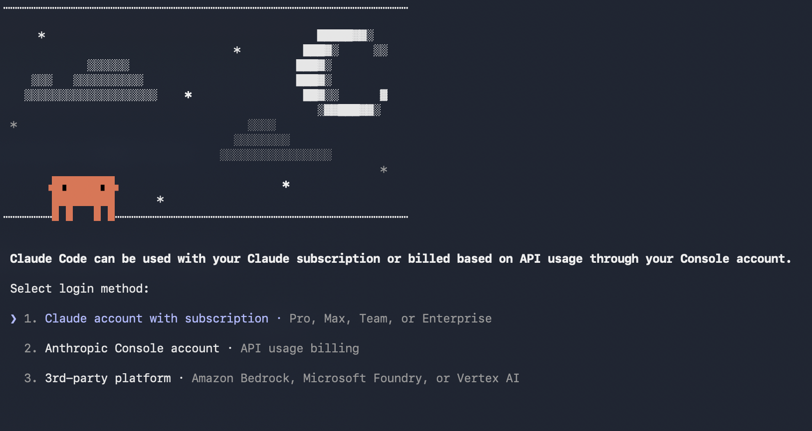
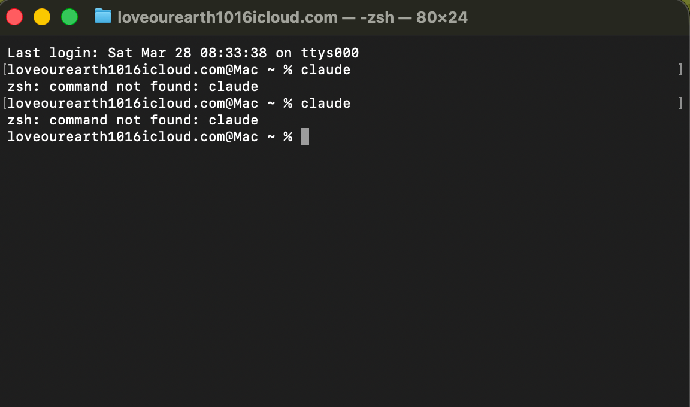
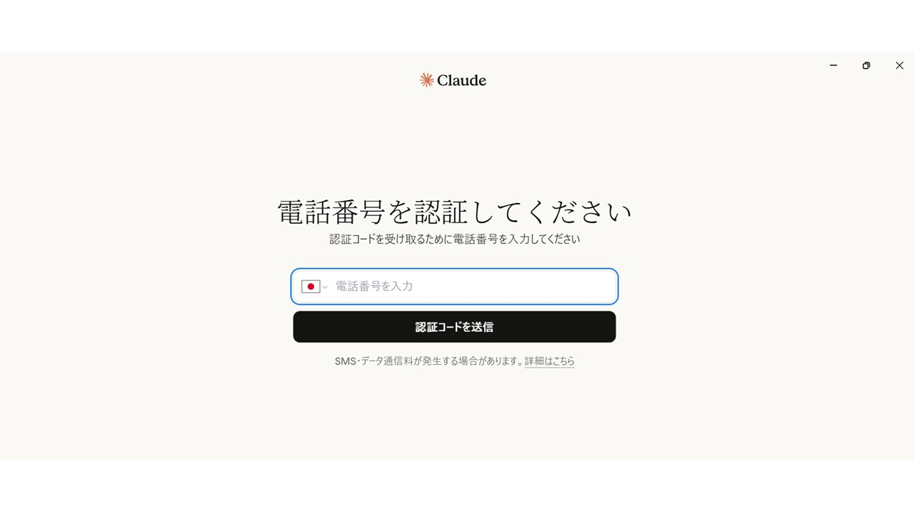
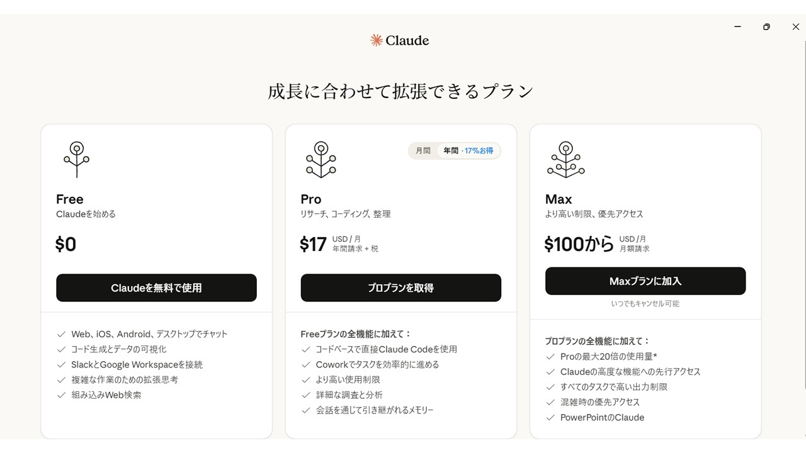
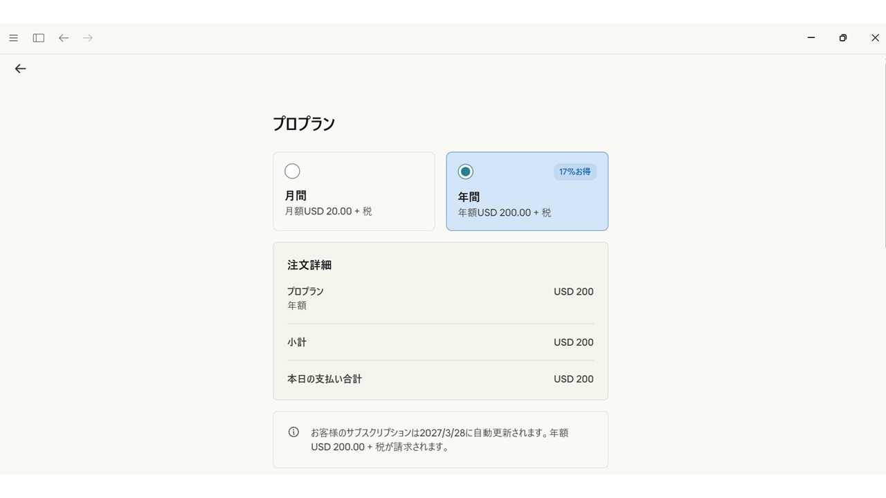
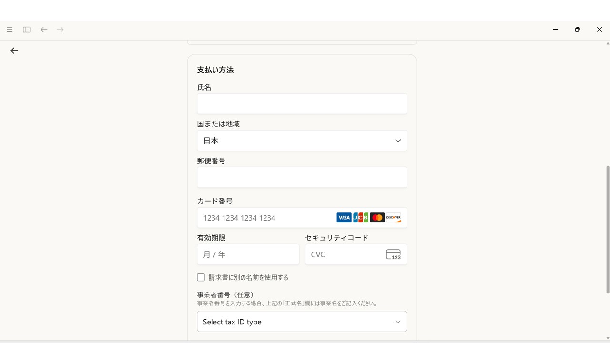
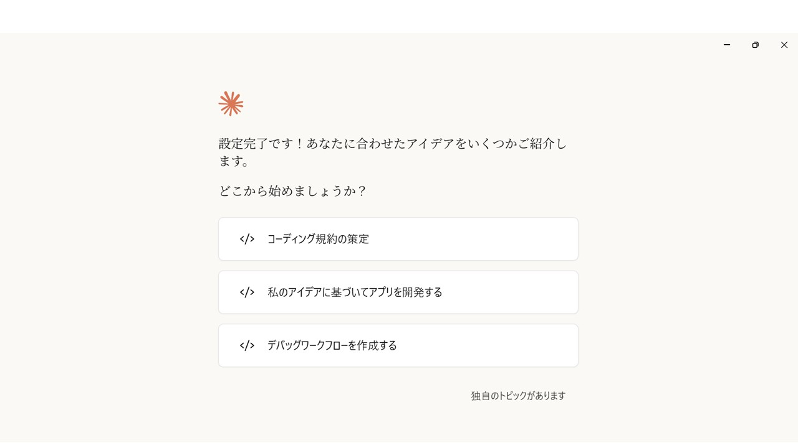
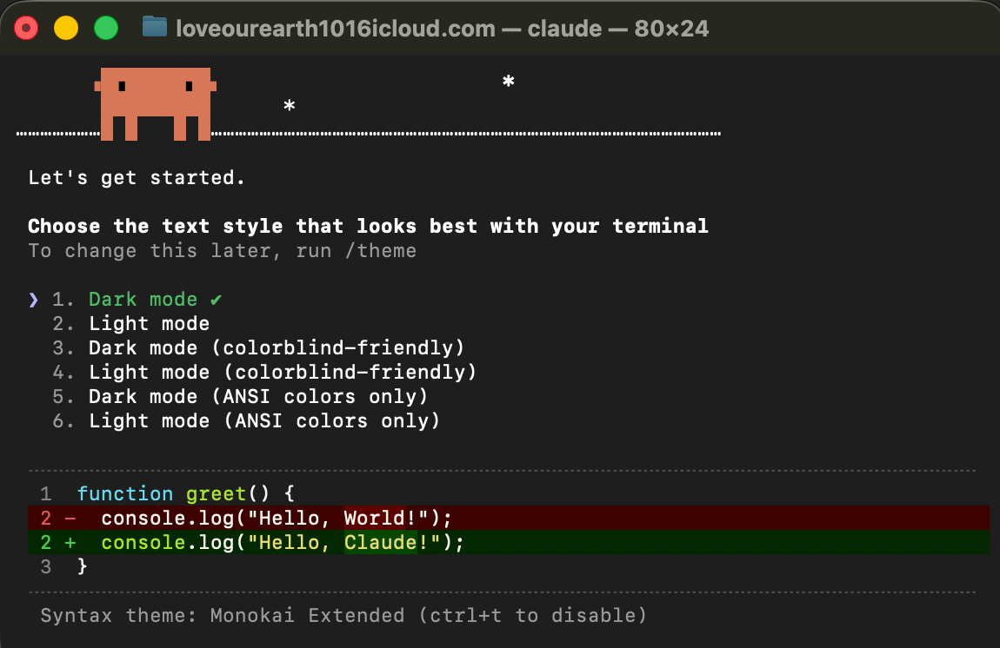

👋 非エンジニア向け・Node.js 不要
Claude Code セットアップガイド
5ステップ、コピペするだけで完了！

↑ セットアップ後こんな感じで使えます
5ステップ、コピペするだけで完了！
↑ セットアップ後こんな感じで使えます
⌘ + Space を押して「ターミナル」と入力 → Enter

こんな画面が開いたら OK です！
※ 黒い画面の場合も白い画面の場合もあります。どちらでも問題ありません。
pwd と入力して Enter を押すと「今いる場所」が表示されます。迷子になったら試してみてください。
Git は、Claude Code が内部で使う道具です。今入っているか確認します。以下を入力して Enter：
git --version
git --version を実行してバージョンが表示されれば OK です。次に Claude Code をインストールします。以下をコピペして Enter！
curl -fsSL https://claude.ai/install.sh | bash
Claude Code は今いるフォルダの中にファイルを作ります。まず専用フォルダを作って移動しましょう：
mkdir claude-practice && cd claude-practice
claude-practice の部分は好きな名前に変えて OK です。フォルダ名は半角英数字で付けるのがおすすめです。では起動します！以下を入力して Enter：
claude
こんな画面が出ます。「1」を選んで Enter で進んでください。


echo 'export PATH="$HOME/.local/bin:$PATH"' >> ~/.zshrc && source ~/.zshrc
① ターミナルで「1」を選んで Enter
② 電話番号認証
ブラウザが開いたら電話番号を入力して SMS 認証します。

③ プランを選ぶ
Free / Pro / Max から選択します。Claude Code には Pro（月 $20）以上が必要です。


④ クレジットカードを入力して完了

⑤ 設定完了！
この画面が出たらログイン完了です。

claude-practice という名前で作った場合は、以下を入力します：
cd claude-practice && claude
claude-practice を自分のフォルダ名に置き換えてください。① まずはプランモードで始めよう
いきなり作り始めるより、先に計画を立ててもらうのがおすすめです。
入力欄で ⇧ + Tab を押すとモードが切り替わります。「Plan mode」になったら送信！
/plan と入力して Enter でも同じく Plan モードになります。② 2回目以降の起動方法
cd claude-practice && claude
claude-practice を自分の名前に置き換えてください。pwd と入力すると今いる場所を確認できます。
③ テーマ（画面の色）を選ぶ
起動直後にこんな選択画面が出ます。↑↓キーで好みの色を選んで Enter！

/theme と入力するだけで再選択できます。④ 日本語で話しかけるだけで OK！
特別な設定は不要です。日本語で入力すれば日本語で答えてくれます。
自己紹介サイトを作って
~/.local/bin が PATH に含まれていない可能性があります。STEP 3 の info-box にある PATH 修正コマンドを試してください。pwd と入力すると今いる場所が表示されます。cd ~ と入力してください。bash の可能性があります。~/.zshrc を ~/.bash_profile に変えて同じコマンドを試してください。Ctrl + C で中断し、もう一度コマンドを実行してください。ターミナル（Mac）/ PowerShell（Windows）
キーボードでパソコンに指示を出すための道具。マウスの代わりに文字で操作します。
Git
ファイルの変更履歴を記録する道具。「いつ・何を変えたか」を自動で覚えてくれます。Claude Code が内部で使っています。
パス（PATH）
パソコンの中のファイルやフォルダの「住所」のこと。例：/Users/あなたの名前/Documents
コマンド
ターミナルに入力する「指示の文」のこと。例：pwd（今いる場所を表示）、cd（フォルダを移動）
準備完了です！さっそく話しかけてみてください。